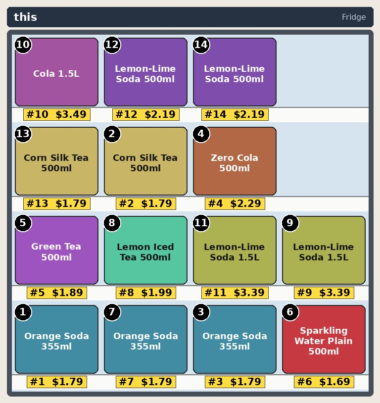

Fig. 3 — Shelf Lab
Real shelf photos, edited with exact ground truth
A phone photo becomes a planogram. Counterfactual edits change only the pixels inside the changed boxes,
so every edit comes with a perfect mask. The same shoppers then judge the render, the photo and the edited photo —
and audit gaps are priced by paired simulation.
engine · shelf_lab
edits · sim2real · audit · bench
pixels outside boxes: untouched
edits · sim2real · audit · bench
pixels outside boxes: untouched

shelf photo
Detect & read
shelves, facings, tags
Grounding DINOclassic CVVLM reading
- bands → levels
- top → bottom
- products
- name · price · facings
- gaps
- empty runs
Planogram
rack face in the twin
replace a facenew racks
Counterfactual edits applied in order
Swaptwo products trade places
Stock-outempty the run, keep the shelf
New packageinpaint an uploaded pack
Price tagreprint the label
Promohang a 1+1 / % sign
GTExact masks. Relit from the context ring, feathered inside the box — the rest of the photo is byte-identical.

edited+ mask
Sim2real same panel, three domains


Decision agreement
same_pick · 95% CIshare of personas who pick the same product (or nothing) on the photo as on the renderAttention shift
level_share · Spearman ρwhich shelf level wins, and whether interest ranks agreeCompliance audit priced
findings
missinggapmisplacedfacingspriceunexpected
Compliance
matched / expected facingsper level and for the whole faceloss/day
each stock-out simulated against the reference with common random numbers → revenue per day with a CIBenchmark
Bench generator
rendered or real captures
index.jsonlimagemaskedits
Detection, change localisation and decision-preserving reconstruction — evaluated against masks that are exact by construction.
pipelinereference from the layout